5. Frequency-Response Analysis & Design
Frequency-response analysis is the substitution \(s=j\omega\): everything we need is the magnitude \(|G(j\omega)|\) and the phase \(\angle G(j\omega)\).
Running examples
First-order process \(\;\tau_p\dfrac{dy}{dt}+y=K_pu,\quad G(s)=\dfrac{K_p}{\tau_ps+1},\quad u=A\sin\omega t\):
\[ y(t)=\underbrace{\frac{AK_p\tau_p\omega}{\tau_p^2\omega^2+1}e^{-t/\tau_p}}_{\to\,0} +\frac{AK_p}{\sqrt{\tau_p^2\omega^2+1}}\sin(\omega t+\phi),\qquad \phi=-\tan^{-1}(\omega\tau_p) \]
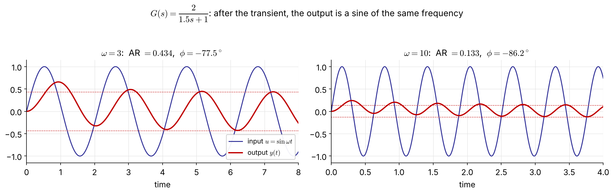
Same frequency; the amplitude ratio \(\text{AR}=K_p/\sqrt{\tau_p^2\omega^2+1}\) falls and the phase lag grows as \(\omega\) increases.
\[ G(j\omega)=\frac{K_p}{j\omega\tau_p+1}=\frac{K_p}{\tau_p^2\omega^2+1}-j\,\frac{K_p\omega\tau_p}{\tau_p^2\omega^2+1}=|G(j\omega)|\,e^{j\phi} \]
\[ |G(j\omega)|=\frac{K_p}{\sqrt{\tau_p^2\omega^2+1}},\qquad \phi=\angle G(j\omega)=-\tan^{-1}(\omega\tau_p) \]
General result (any stable \(G\), see Appendix for the derivation): at large times
\[ \frac{y_\infty(t)}{A}=|G(j\omega)|\,\sin\big(\omega t+\angle G(j\omega)\big) \]
No partial fractions needed — substitute \(s=j\omega\) and take modulus and argument.
For \(\;G(s)=\dfrac{G_a(s)G_b(s)\cdots G_m(s)}{G_1(s)G_2(s)\cdots G_n(s)}\):
\[ \log|G(j\omega)|=\sum_{\text{num}}\log|G_a(j\omega)|-\sum_{\text{den}}\log|G_i(j\omega)|,\qquad \angle G(j\omega)=\sum_{\text{num}}\angle G_a(j\omega)-\sum_{\text{den}}\angle G_i(j\omega) \]
On log scales, magnitudes add and phases add → a Bode plot is the sum of simple pieces.
Example 5.1 \(G(s)=\dfrac{\tau_as+1}{(\tau_1s+1)(\tau_2s+1)}\) NEW
\[ |G(j\omega)|=\frac{\sqrt{1+\omega^2\tau_a^2}}{\sqrt{1+\omega^2\tau_1^2}\,\sqrt{1+\omega^2\tau_2^2}},\qquad \phi=\tan^{-1}(\omega\tau_a)-\tan^{-1}(\omega\tau_1)-\tan^{-1}(\omega\tau_2) \]
(The original slide left this blank — solution added.)
Bode plot — two plots against \(\log\omega\)
Nyquist (polar) plot — \(G(j\omega)\) drawn in the complex \(G\)-plane with \(\omega\) as the parameter FIX
\[ G(j\omega)=\mathrm{Re}\,G+j\,\mathrm{Im}\,G=|G|e^{j\phi} \]
Same information; more compact, but \(\omega\) is not shown explicitly.
| AR | dB |
|---|---|
| 0.01 | −40 |
| 0.1 | −20 |
| 0.5 | −6 |
| 1 | 0 |
| 2 | +6 |
| 10 | +20 |
| 100 | +40 |
A factor 10 is 20 dB; a factor 2 is ≈ 6 dB.
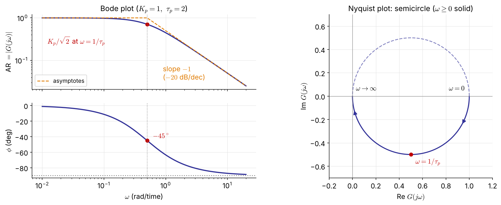
\[ G(j\omega)=\frac{K\left[(1-\tau^2\omega^2)-j\,2\zeta\tau\omega\right]}{(1-\tau^2\omega^2)^2+(2\zeta\tau\omega)^2} \] \[ |G|=\frac{K}{\sqrt{(1-\tau^2\omega^2)^2+(2\zeta\tau\omega)^2}} \] \[ \phi=\tan^{-1}\!\frac{-2\zeta\tau\omega}{1-\tau^2\omega^2}\quad(0\to-180^\circ) \]
Resonance for \(0<\zeta<1/\sqrt2\) FIX \[ \omega_r=\frac{\sqrt{1-2\zeta^2}}{\tau},\qquad M_{p\omega}=\frac{K}{2\zeta\sqrt{1-\zeta^2}} \] Smaller \(\zeta\) → higher peak → more overshoot in time (derivation: Appendix).
The original said the curve rises above \(K\) for \(\zeta<1/2\); that is the condition for \(|G(j/\tau)|>K\). The resonant peak itself exists for \(\zeta<0.707\).
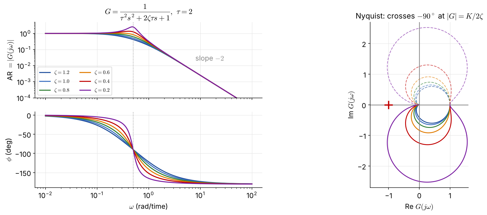
Low damping: a sharp resonant peak in \(|G|\) and a fast phase drop at \(\omega=1/\tau\); the Nyquist curve bulges far beyond the radius-\(K\) circle.
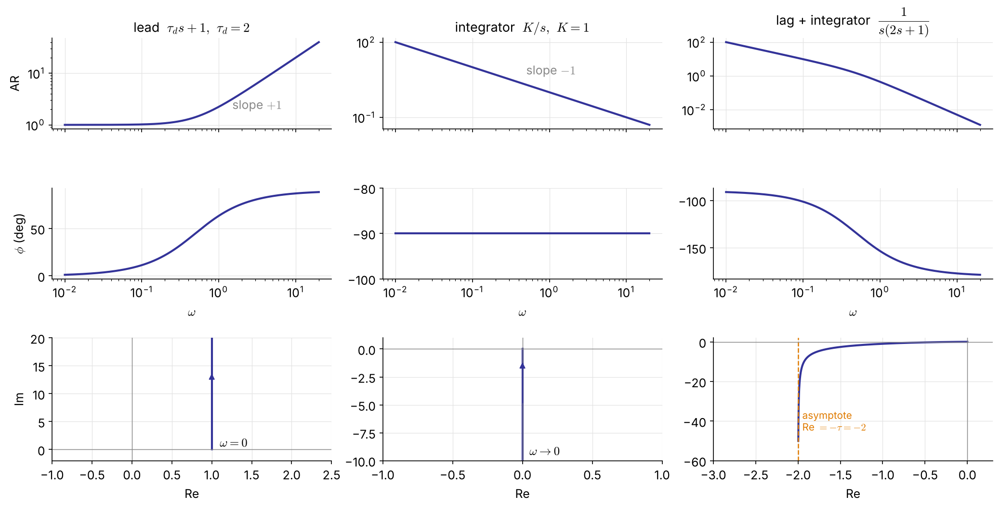
\(|G|=\sqrt{1+\omega^2\tau_d^2}\), \(\ \phi=+\tan^{-1}\omega\tau_d\) (phase lead)
\(|G|=K/\omega\), \(\ \phi=-90^\circ\) for all \(\omega\)
\(\phi\) from \(-90^\circ\) to \(-180^\circ\); Nyquist asymptote \(\mathrm{Re}=-\tau\)
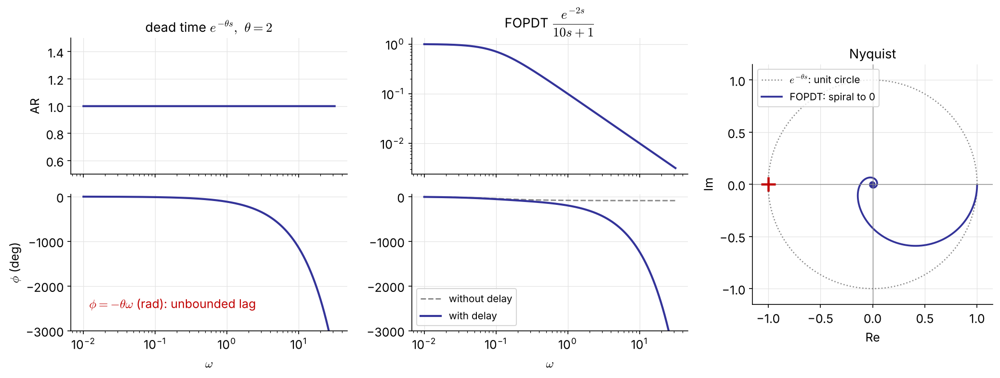
\(|e^{-j\omega\theta}|=1,\ \angle e^{-j\omega\theta}=-\omega\theta\) (rad): the phase lag grows without bound. FOPDT: \(|G|=\dfrac{K_p}{\sqrt{1+\omega^2\tau_p^2}},\ \ \phi=-\tan^{-1}(\omega\tau_p)-\omega\theta\).
Nonminimum-phase systems contain dead time or RHP zeros (Ex 5.10); a minimum-phase system has neither, and no RHP poles.
| Factor | AR \(=|G(j\omega)|\) | \(\phi=\angle G(j\omega)\) | high-\(\omega\) slope | \(\phi\) range |
|---|---|---|---|---|
| \(K\) | \(K\) | \(0\) | \(0\) | \(0\) |
| \(\dfrac{1}{\tau s+1}\) | \(\dfrac{1}{\sqrt{1+\omega^2\tau^2}}\) | \(-\tan^{-1}\omega\tau\) | \(-1\) | \(0\to-90^\circ\) |
| \(\tau s+1\) (LHP zero) | \(\sqrt{1+\omega^2\tau^2}\) | \(+\tan^{-1}\omega\tau\) | \(+1\) | \(0\to+90^\circ\) |
| \(-\tau s+1\) (RHP zero) | \(\sqrt{1+\omega^2\tau^2}\) | \(-\tan^{-1}\omega\tau\) | \(+1\) | \(0\to-90^\circ\) |
| \(\dfrac{1}{s}\) | \(\dfrac1\omega\) | \(-90^\circ\) | \(-1\) | — |
| \(s\) | \(\omega\) | \(+90^\circ\) | \(+1\) | — |
| \(\dfrac{1}{\tau^2s^2+2\zeta\tau s+1}\) | see Ex 5.3 | \(-2\) | \(0\to-180^\circ\) | |
| \(e^{-\theta s}\) | \(1\) | \(-\omega\theta\) | \(0\) | unbounded |
Slopes are in decades of AR per decade of \(\omega\) (×20 for dB/dec). The RHP zero has the magnitude of an LHP zero but the phase of a pole — the origin of its trouble.
For real poles and zeros the asymptotes are within 3 dB of the exact curve (largest error at a corner; underdamped pairs can deviate more near resonance) — good enough to read crossover frequencies and margins by hand.
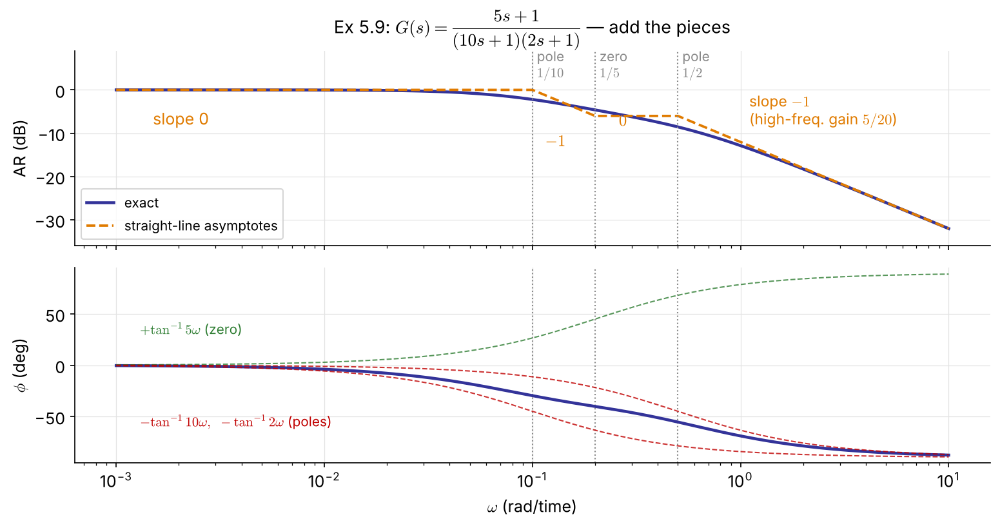
Corners: \(0.1\) (pole), \(0.2\) (zero), \(0.5\) (pole)
| \(\omega\) range | slope |
|---|---|
| \(<0.1\) | 0 |
| \(0.1\)–\(0.2\) | \(-1\) |
| \(0.2\)–\(0.5\) | 0 |
| \(>0.5\) | \(-1\) |
High frequency: \(|G|\to\dfrac{5}{20\omega}\), \(\ \phi\to-90^\circ\)
Phase: \(\tan^{-1}5\omega-\tan^{-1}10\omega-\tan^{-1}2\omega\) never reaches \(-90^\circ\) at finite \(\omega\)
import numpy as np, control as ct, matplotlib.pyplot as plt
G = ct.tf(1, [2, 1]) # Ex 5.2
ct.bode_plot(G, dB=False, deg=True) # AR (log) and phase (deg)
ct.nyquist_plot(G)
# dead time: evaluate G(jw) e^{-jw*theta} exactly (no Pade)
w = np.logspace(-3, 2, 2000)
g = ct.tf(1, [10, 1])(1j*w) * np.exp(-2j*w) # Ex 5.6, theta = 2
mag, phase = np.abs(g), np.degrees(np.unwrap(np.angle(g)))
fig, (a1, a2) = plt.subplots(2, 1, sharex=True)
a1.loglog(w, mag); a2.semilogx(w, phase)\(G_{OL}\) strictly proper, no poles on or right of the imaginary axis (a single pole at the origin is allowed), and one phase crossover \(\omega_c\) (\(\angle G_{OL}=-180^\circ\)) and one gain crossover \(\omega_g\) (\(|G_{OL}|=1\)):
closed loop stable \(\iff |G_{OL}(j\omega_c)|<1\)
Applies with dead time — unlike Routh.
\(G_{OL}\) proper, no unstable pole–zero cancellations.
\[Z=N+P\qquad\text{stable}\iff Z=0\]
FIX (the original had \(Z=N-P\); with clockwise \(N\) the sign is \(+\))
Why \(-1\)? The characteristic equation \(1+G_{OL}=0\) means \(G_{OL}=-1\), i.e. \(|G_{OL}|=1\) and \(\phi_{OL}=-180^\circ\) — the critical point.
\(G=\dfrac{3(-2s+1)}{(10s+1)(5s+1)}\) has a RHP zero at \(s=0.5\) → high gain is fundamentally limited.
\[ (10s+1)(5s+1)+3K_c(-2s+1)=0\iff 50s^2+(15-6K_c)s+(1+3K_c)=0 \]
Routh: \(\;15-6K_c>0,\ 1+3K_c>0\;\Rightarrow\;-\tfrac13<K_c<2.5\) \(\quad\) → ultimate gain \(K_u=2.5\); at \(K_u\): \(50s^2+8.5=0\), \(s=\pm j0.412\)
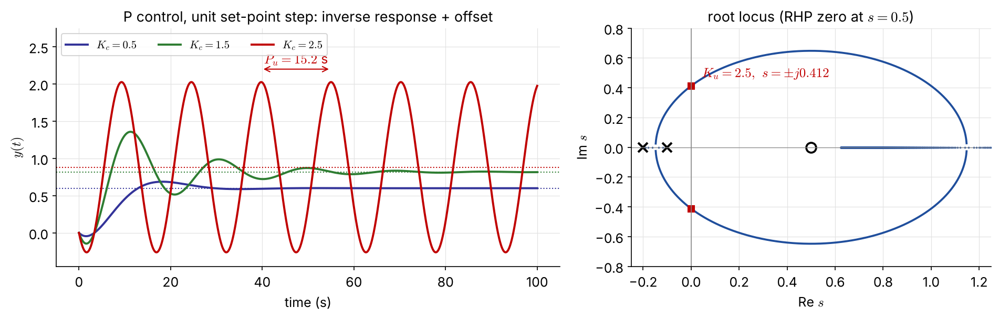
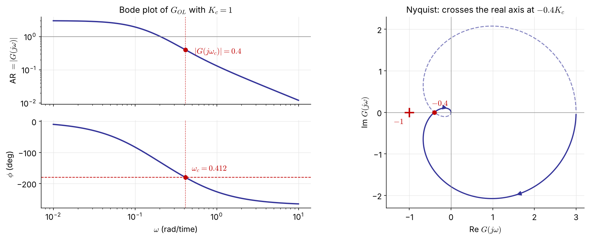
With \(K_c=1\): phase crossover \(\omega_c=0.412\), \(\ |G(j\omega_c)|=0.4\)
\(|G_{OL}(j\omega_c)|=0.4K_c<1\iff\) \(K_c<2.5\) — the same as Routh
Nyquist: the real-axis crossing at \(-0.4K_c\) reaches \(-1\) when \(K_c=2.5\); \(\ P_u=2\pi/\omega_c=15.2\) s
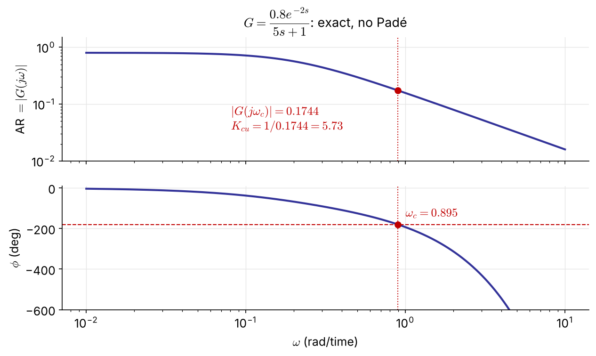
\(G_{OL}=K_c\dfrac{0.8e^{-2s}}{5s+1}\)
Phase crossover: \(\;-\tan^{-1}(5\omega_c)-2\omega_c=-\pi\) \(\Rightarrow\omega_c=0.895\)
\[ K_{cu}=\frac{1}{|G(j\omega_c)|}=\frac{\sqrt{1+25\omega_c^2}}{0.8}=5.73 \]
The same answer as direct substitution in Ch 4 — read off one Bode plot, with no Padé approximation (1st-order Padé gave 7.5).
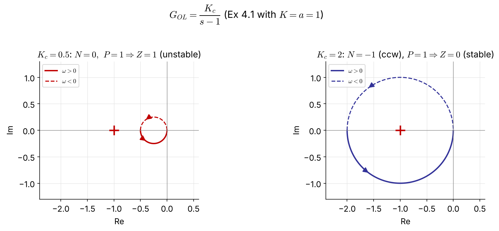
\(K_c/(s-1)\) is a circle of diameter \(K_c\) through \(0\) and \(-K_c\), traversed counterclockwise. \(P=1\), so stability needs \(N=-1\): the circle must enclose \(-1\) ⇒ \(K_c>1\) — exactly Ex 4.1 (\(K_cK>a\)). The Bode criterion cannot be used here (\(P\neq0\)).
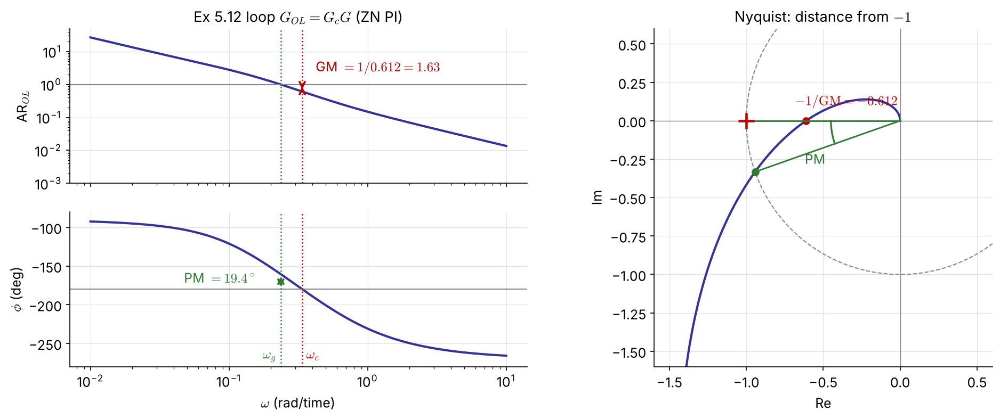
Gain margin (at \(\omega_c\), where \(\angle G_{OL}=-180^\circ\)) \[ \mathrm{GM}=\frac{1}{|G_{OL}(j\omega_c)|} \]
Phase margin (at \(\omega_g\), where \(|G_{OL}|=1\)) \[ \mathrm{PM}=180^\circ+\angle G_{OL}(j\omega_g) \]
GM — factor by which the loop gain can grow before instability → safeguard against gain (model) error
Typical spec: GM > 2 (6 dB)
GM \(=1/|G_{OL}(j\omega_c)|\) is the distance from \(-1\) along the real axis
PM — extra phase lag tolerated at \(\omega_g\) → safeguard against dead-time error
Typical spec: PM > 30° (often 45°)
Extra delay that destabilizes: FIX \[ \theta_{\max}=\frac{\mathrm{PM}\ (\text{rad})}{\omega_g} \]
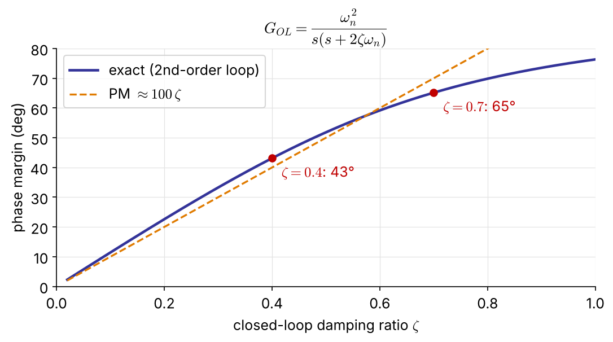
For a loop that behaves like \(\dfrac{\omega_n^2}{s(s+2\zeta\omega_n)}\):
\[ \mathrm{PM}=\tan^{-1}\!\frac{2\zeta}{\sqrt{\sqrt{1+4\zeta^4}-2\zeta^2}} \;\approx\;100\,\zeta\ (\text{deg}) \]
PM 45° ↔︎ \(\zeta\approx0.4\) (overshoot ≈ 25 %)
PM 65° ↔︎ \(\zeta\approx0.7\) (overshoot ≈ 5 %)
A small PM means an oscillatory closed loop — the bridge to the \(\zeta\)-based root-locus design of Ch 4.
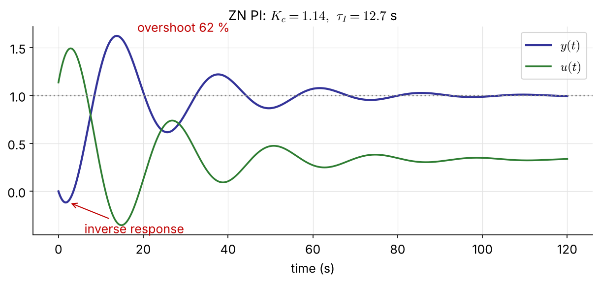
\(G_c=K_c\left(1+\dfrac{1}{\tau_Is}\right)\) removes the P-control offset.
ZN settings from Ex 5.11 (\(K_u=2.5,\ P_u=15.2\) s):
\[ K_c=\frac{K_u}{2.2}=1.14,\qquad \tau_I=\frac{P_u}{1.2}=12.7\ \text{s} \]
GM \(=1.63\), PM \(=19.4^\circ\) — too small (GM > 2, PM > 30°)
→ 62 % overshoot, slow-decaying oscillation
ZN tunings are deliberately “aggressive” (quarter-decay); use them only as a starting point.
import numpy as np, control as ct
G = ct.tf([-6, 3], np.polymul([10, 1], [5, 1]))
gm, pm, wc, wg = ct.margin(G) # P control with Kc = 1
Ku, Pu = gm, 2*np.pi/wc # 2.5, 15.2 s
Kc, tI = Ku/2.2, Pu/1.2 # Ziegler-Nichols PI
L = Kc*ct.tf([tI, 1], [tI, 0])*G
gm, pm, wc, wg = ct.margin(L) # GM 1.63, PM 19.4 deg
theta_max = np.radians(pm)/wg # 1.43 s of extra dead time
ct.bode_plot(L, display_margins=True)Write the loop as \(\;1+G_{OL}=1+K_cG^*=0\), where \(G^*\) contains everything except \(K_c\) (process, valve, sensor, and the \(\tau_I,\tau_D\) terms of the controller).
From a GM spec
\(\angle K_c=0\), so \(G^*\) and \(G_{OL}\) share \(\omega_c\):
\[ K_{cu}=\frac{1}{|G^*(j\omega_c)|},\qquad K_c=\frac{K_{cu}}{\mathrm{GM}} \]
From a PM spec
Find \(\omega_g\) where \(\angle G^*=-180^\circ+\mathrm{PM}\) (e.g. \(-135^\circ\) for 45°):
\[ K_c=\frac{1}{|G^*(j\omega_g)|} \]
Compute both and take the smaller \(K_c\), which satisfies both specs. One Bode plot of \(G^*\) does it all.
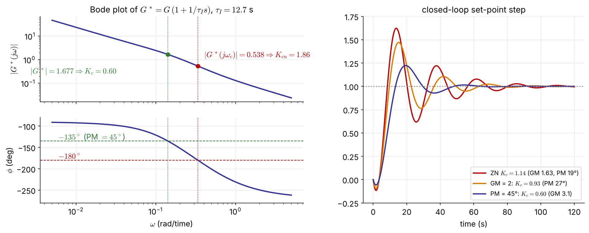
Keep \(\tau_I=12.7\) s: \(\;G^*=G\,(1+1/\tau_Is)\), \(\ \omega_c=0.338\), \(\ K_{cu}=1.86\)
\(K_c=0.60\) meets both specs: overshoot 62 % → 22 %, settles in 45 s instead of 89 s
tI = Pu/1.2
Gs = ct.tf([tI, 1], [tI, 0])*G # G* = everything except Kc
Kcu = ct.margin(Gs)[0] # 1.86
Kc_GM = Kcu/2 # GM = 2 -> 0.93
w = np.logspace(-3, 1, 100000)
g = Gs(1j*w)
phase = np.degrees(np.unwrap(np.angle(g)))
i = np.argmin(abs(phase - (-180 + 45))) # phase = -135 deg
Kc_PM = 1/abs(g[i]) # PM = 45 deg -> 0.60
Kc = min(Kc_GM, Kc_PM)
print(ct.margin(Kc*Gs), ct.step_info(ct.feedback(Kc*Gs, 1)))tI = Pu/1.2;
Gs = tf([tI 1],[tI 0])*G; % G* = everything except Kc
Kcu = margin(Gs); Kc_GM = Kcu/2; % 1.86 -> 0.93
w = logspace(-3, 1, 1e5);
[m, p] = bode(Gs, w); m = squeeze(m); p = squeeze(p);
[~, i] = min(abs(p + 135)); % phase = -135 deg
Kc_PM = 1/m(i) % 0.60
Kc = min(Kc_GM, Kc_PM);
margin(Kc*Gs), stepinfo(feedback(Kc*Gs, 1))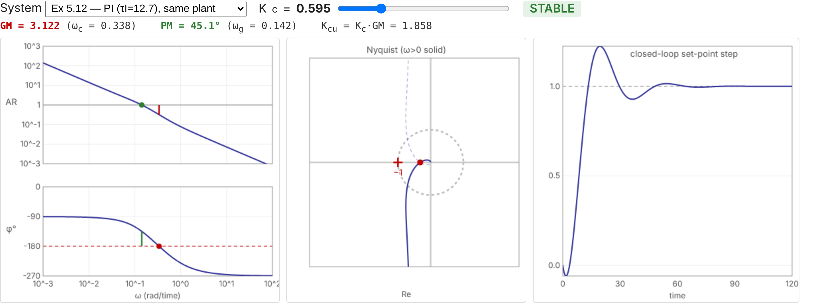
Interactive version: seoultechpse.github.io/ProCon/ch5/ch5_frequency.html — move \(K_c\) for Ex 5.11, 5.12, Ex 4.4 and Ex 4.2.
They complement each other; a design decision is often made only after both.
Root locus (Ch 4)
Frequency response (Ch 5)
| Task | MATLAB | Python (control) |
|---|---|---|
| Bode / Nyquist | bode(G), nyquist(G) |
ct.bode_plot(G), ct.nyquist_plot(G) |
| dead time | tf(..., 'InputDelay', θ) |
G(1j*w)*np.exp(-1j*w*θ) |
| margins | [GM,PM,wc,wg] = margin(L) |
gm, pm, wc, wg = ct.margin(L) |
\[ G_p=\frac{2e^{-s}}{10s+1},\qquad G_c=K_c\left(1+\frac{1}{\tau_Is}\right),\quad \tau_I=10 \]
Show that \(\tau_I=10\) makes \(G_{OL}\) a pure integrator with dead time. Sketch its Bode plot by hand.
Find the phase crossover \(\omega_c\) and the ultimate gain \(K_{cu}\) analytically.
Find \(K_c\) for PM \(=45^\circ\). What is the resulting GM? Comment on the result.
Check (b)–(c) with ct.margin and simulate the set-point response.
Hint: the phase of \(e^{-j\omega}/j\omega\) is \(-\pi/2-\omega\).
Stable \(G=Q/P\), input \(A\sin\omega t\): \(\;Y(s)=\dfrac{Q(s)}{P(s)}\dfrac{A\omega}{(s+j\omega)(s-j\omega)}\)
All roots of \(P\) have negative real parts, so their terms decay. At large times only the input poles remain:
\[ Y_\infty(s)=\frac{a}{s+j\omega}+\frac{a^*}{s-j\omega},\qquad a=(s+j\omega)Y(s)\big|_{s=-j\omega}=\frac{AG(-j\omega)}{-2j} \]
With \(G(\pm j\omega)=|G(j\omega)|e^{\pm j\phi}\):
\[ \frac{y_\infty(t)}{A}=|G(j\omega)|\left(\frac{e^{-j(\omega t+\phi)}}{-2j}+\frac{e^{j(\omega t+\phi)}}{2j}\right)=|G(j\omega)|\sin(\omega t+\phi),\qquad \phi=\angle G(j\omega) \]
\[ \frac{d}{d\omega}\Big[(1-\tau^2\omega^2)^2+(2\zeta\tau\omega)^2\Big]=0 \;\Rightarrow\;\tau^2\omega_r^2=1-2\zeta^2 \]
\[ M_{p\omega}=|G(j\omega_r)|=\frac{K}{\sqrt{(2\zeta^2)^2+4\zeta^2(1-2\zeta^2)}}=\frac{K}{2\zeta\sqrt{1-\zeta^2}} \]
A real \(\omega_r\) requires \(1-2\zeta^2>0\), i.e. \(\zeta<1/\sqrt2\).
| \(\zeta\) | 0.2 | 0.4 | 0.6 |
|---|---|---|---|
| \(\tau\omega_r\) | 0.96 | 0.82 | 0.53 |
| \(M_{p\omega}/K\) | 2.55 (8.1 dB) | 1.36 (2.7 dB) | 1.04 (0.4 dB) |